R-67's chain, with the two line passes made explicit. Measurement taps the stain, never the print.
The slot chain
Palette and medium compose. Each slot holds a sub-graph; an empty slot is the identity. Rendered by the lab on a Principia render (config stability).
MediumWatercolour pencil
+
PalettePoster pigments, nearest colour
+
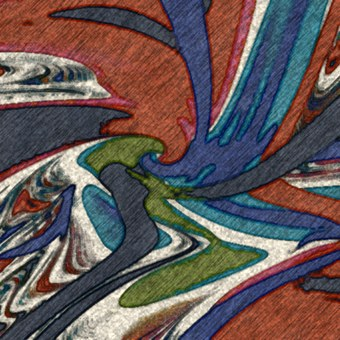
Ground · on the groundcold-press watercolour
+
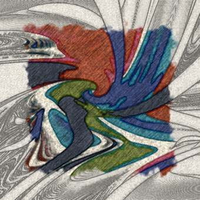
Unfinished72%, from the edges
+
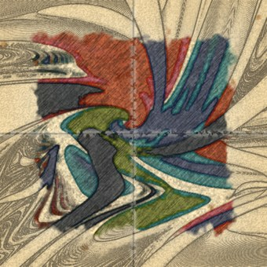
Age70 years, foxed, folded in four
+
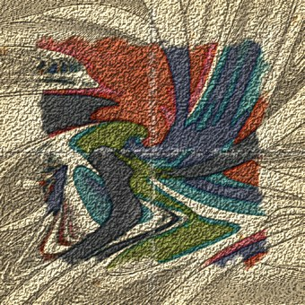
Viewingraking light
Each frame adds one slot to the one before, rendered by the lab. The chain runs Palette → Medium → On the ground → Unfinished → Age → Viewing; the frames add them in the order a user would. The simple panel edits this template; the advanced editor shows the same graph as nodes.
The Print panel
Replaces Display › Style. Slots edit settings; the gallery fills Medium; "Edit graph…" opens the Stain's node editor on the same graph.
Display › PrintPlainPrint
Palette
Poster pigments▾
amount
1.00
Medium
Paint › Watercolour pencil▾
seed
3
Ground
Cold-press watercolour▾
tooth
1.00
Unfinished
Finished▾
Age
New▾
Viewing
Flat▾
Boil
Off▾
Edit graph…Reset to Plain
Presets103 in 11 families · live thumbnails of this view
Watercolour pencil
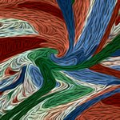
Oil
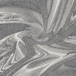
GraphiteLinocutRisograph
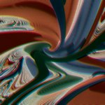
Offset press (1978)CRT television
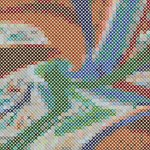
Cross-stitchPolaroid
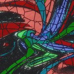
Stained glass
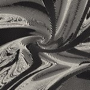
EngravingCyanotype
Canvas corner badge while active: Print: Watercolour pencil · figure export defaults to Plain.
Degrade while moving
Watercolour pencil. Reduced levels here are a downsample of the full render, illustrative of the look, not a run of the port.
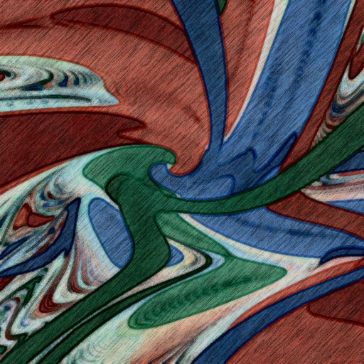
Still: fullpost_level = fullMoving: reduced ½heavy nodes at half resolutionOver budget: reduced ¼whole graph drops a level
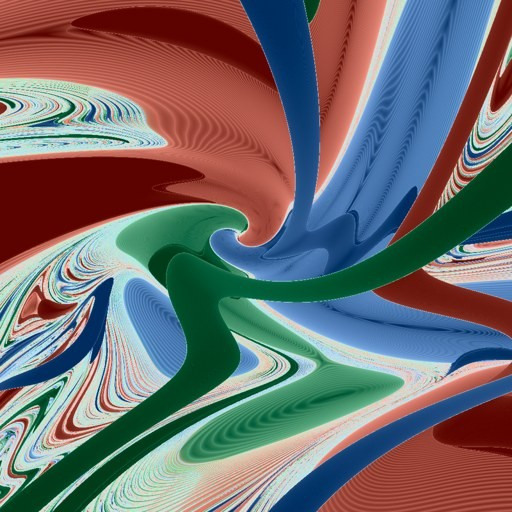
Last resort: Plainbypass while moving
The playhead advancing is not motion: the view is still, so the medium stays at full quality, and screen-anchored seeding keeps the marks from shimmering.
Run benchmark
Profiler window. Values are filled by the run; nothing here is a measurement.
Run benchmark×
Quick · ~2 minFull · ~15–20 minSoak · +10 min
Records your device, OS, driver and Principia build, the settings each scenario used, and how long every frame took. Nothing about you or your files. You can read the file before sending it.
On battery: plug in for Full and Soak.
CancelRun
During the run
pan-nearfield · tier High7 of 23 · 11 min left · Esc aborts